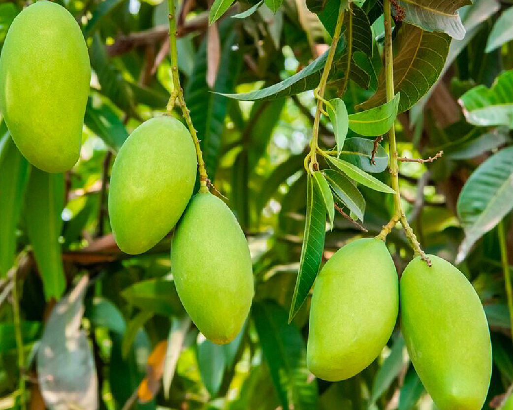

มะม่วงพราหมณ์ขายเมีย

มะม่วงชนิดนี้ เป็นมะม่วงไทยโบราณนิยมปลูกเฉพาะถิ่นแถบ อ.บางกรวย อ.ไทรน้อย จ.นนทบุรี กับย่านตลิ่งชัน เขตบางกอกน้อย ฝั่งธนบุรี กทม. มาช้านานแล้ว ที่มาของชื่อพันธุ์เกิดจากรสชาติความอร่อยของมะม่วง ทำให้พราหมณ์ต้องยอมขายเมียตัวเองเพื่อเอาเงินไปซื้อผลสุกมากิน จึงถูกเรียกว่า “มะม่วงพราหมณ์ขายเมีย” มะม่วงพราหมณ์ขายเมีย เป็นไม้ยืนต้นสูง 10-15 เมตร แตกกิ่งก้านสาขาเยอะ ใบเป็นใบเดี่ยว ออกเวียนสลับรอบกิ่งก้านส่วนปลายยอด ใบเป็นรูปรีแกมรูปใบหอก ปลายใบแหลม โคนมน เนื้อในหนา สีเขียวสด ทรงผลรูปกลมรี น้ำหนักเฉลี่ย 3-4 ผล ต่อกิโลกรัม ผลดิบสีเขียว รสชาติเปรี้ยวปนหวานและมัน ผลสุกสีเหลือง เนื้อในสีเหลืองอมส้ม หวานหอมไม่เละ ไม่มีเสี้ยน เมล็ดเล็กบาง ความหวานวัดได้ถึง 19.2 องศาบริกซ์ ติดผลปีละครั้งตามฤดูกาล